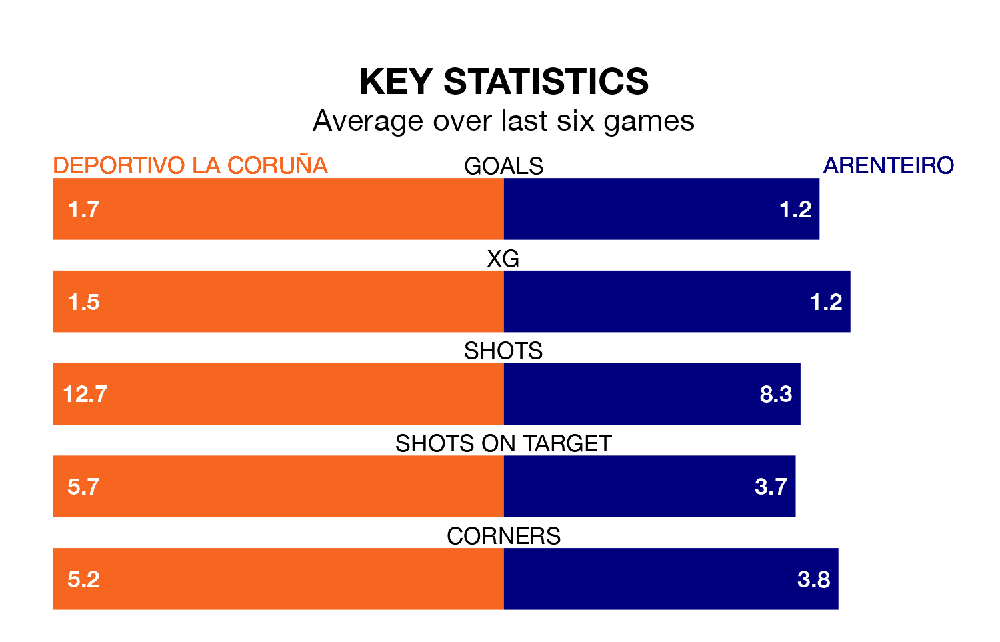

Deportivo La Coruña are heavy favourites to keep all three points at home in Sunday's late kick-off against Arenteiro.
Deportivo La Coruña, who sit top of Primera Division RFEF Group 1 with 33 games played, are priced at 1.3 to seal victory.
Sitting six places and 18 points behind them in the table, Arenteiro are 10.1 to win with *Betting Company*, while the draw is at 4.2.
With 56 goals in 33 games so far this season, Deportivo La Coruña are the league's second-highest scorers with 1.7 goals per game. And they are conceding fewer than average, letting in 23 goals at a rate of 0.7 per game.
Arenteiro are also above average scorers, with 1.2 goals per game, compared to a league average of 1.1. They have conceded 0.9 goals per game.
The hosts are in fantastic form in Primera Division RFEF Group 1, with five wins and a draw from their last six games.
With two wins and four draws over that period, the away side's form is much worse – they have taken 10 points from 18, compared to Deportivo La Coruña's 16.
Deportivo La Coruña's Lucas Perez is the league's most creative player, racking up 11 assists in 22 appearances so far this season.
For Arenteiro, Agustín Emanuel Pastoriza Cacabelos and Luis Rodríguez Chacón have set up the most goals, having laid on two assists apiece to date.
Deportivo La Coruña's last match was on April 20, a 2-0 win against Cultural y Deportiva Leonesa, with Antonio David Álvarez Rey and Pérez Martínez getting the goals for Deportivo La Coruña.
Arenteiro drew 0-0 with SD Ponferradina last time out, on April 21.
Updated: 07:59 (UTC), 26/04/24